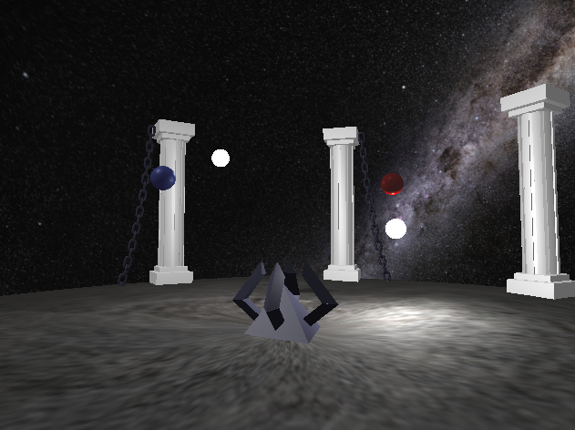
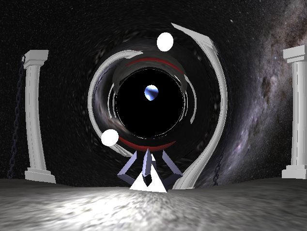
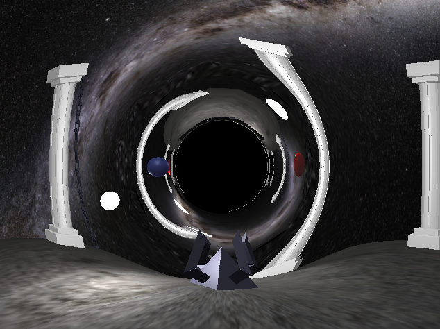
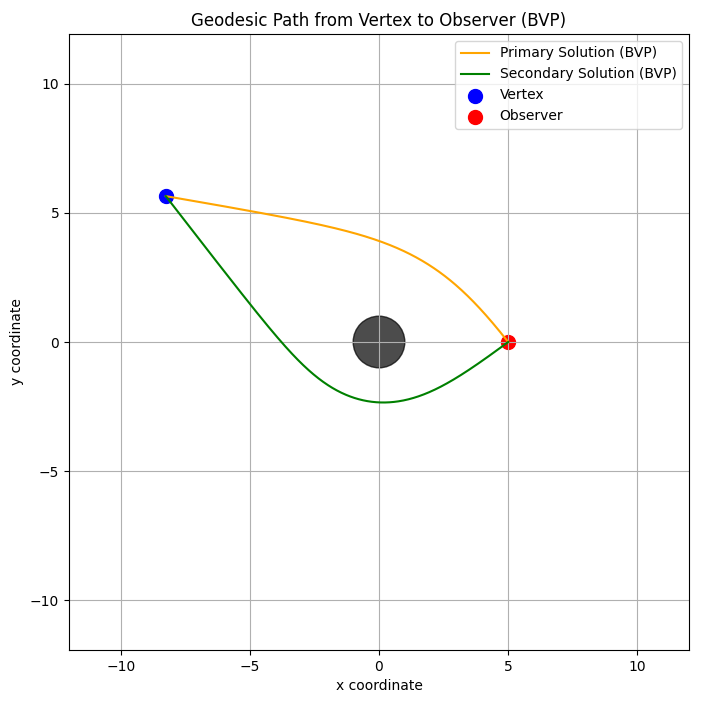
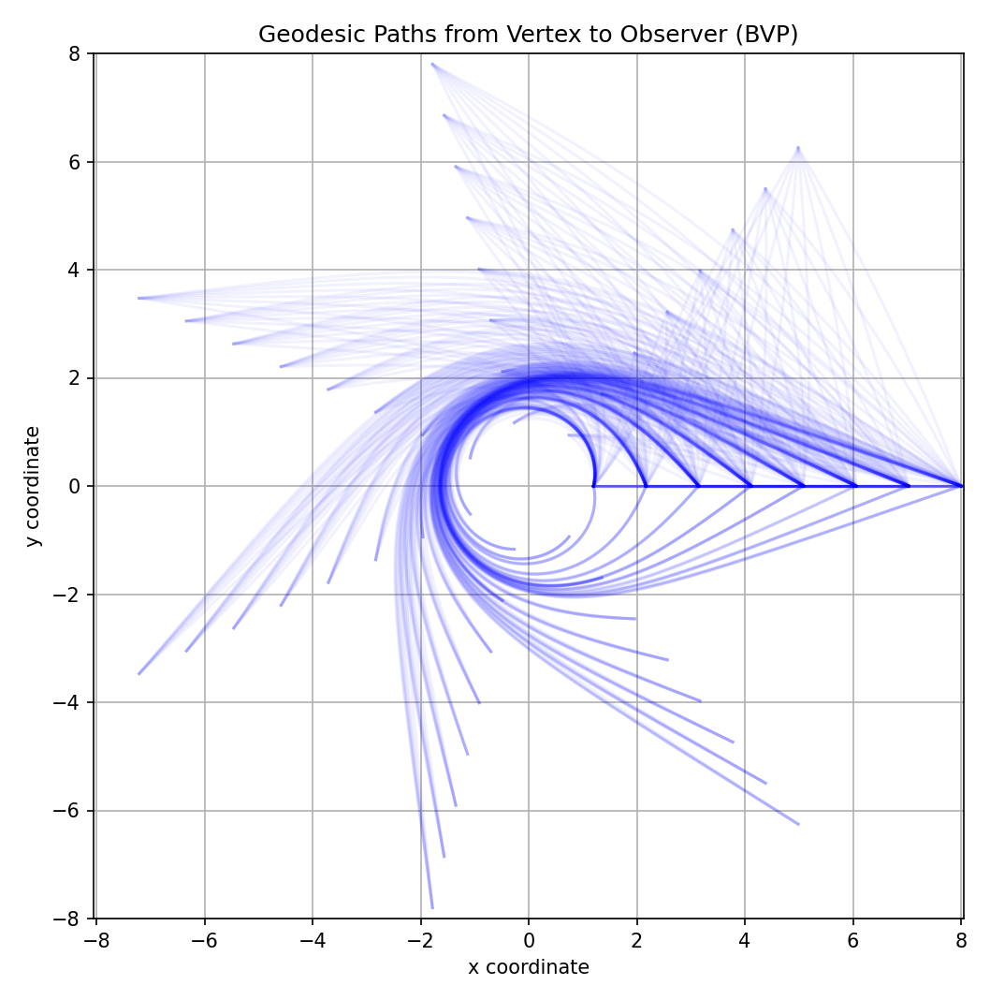
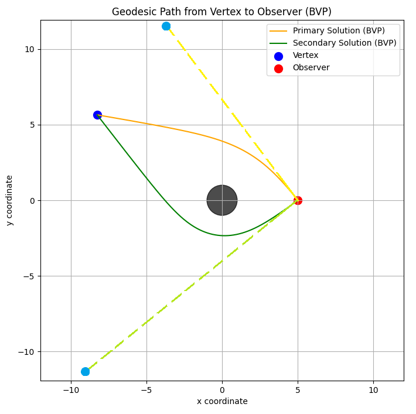
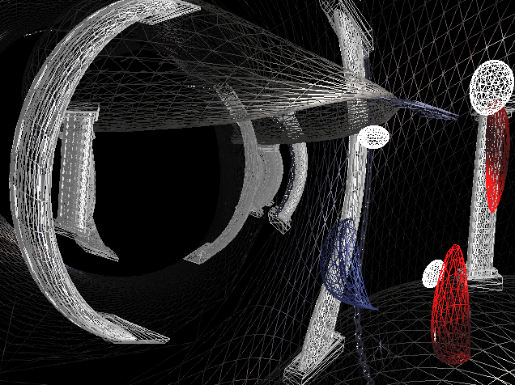

Project Overview
For this project, I created a rasterization framework that aims to accurately simulate images of areas warped by black holes. Below are some examples of before and after the effect is toggled.
  Video Demo
Source Code
I currently do not have the source code uploaded to any public repositories. I will try to update this page when that changes.
Technical Details
A lot of the work done for this project was previously explored by this paper.
The black hole effect is derived from the Schwarzschild metric, a solution to the Einstein field equations that can be used to accurately model light paths within black hole spacetime. As the paper suggests, the boundary value problem (BVP) of the set of derived differential geodesic equations can be solved to evaluate the trajectories a light ray would take between a vertex and an observer around a black hole (I focused on two solutions for simplicity).
Unfortunately, this is a very expensive computation, even moreso because I was using Python's `scipy` library to brute force solutions from boundary conditions and initial states. My solution to this problem was similar to the paper's, albeit less... thorough. I precomputed a set of information inside a 3D texture that could be efficiently sampled from within the vertex shader. The below example is much lower resolution than the one I ended up using, but still paints a good example.
This information could then be used to reconstruct the scene as it would appear with the added complexity of the black hole. Two draw calls were also used for this: one for the more direct (primary) path light would take around the black hole, and one for the more roundabout (secondary) one. To actually do the translation, the angle at which the path hit the observer and the distance of the path were used to create a new position for the vertex, placing it in a location that matches how it would appear in a black hole render. The angle at which the ray hits the vertex was also used for normal and lighting calculations. In a way, the curved path is "unwrapped" to become a straight line, which can then be used in the standard rasterization pipeline.
Because of this purely vertex-shader-based solution, the actual scene camera can be decoupled from the camera the black hole system uses to warp the geometry, allowing the user to fly through the distorted space as if seeing it from another angle.
